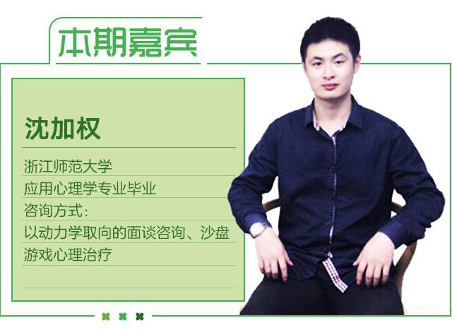

问题征集啦！丨心理咨询到底是怎么一回事呢？

生活总是那么艰难
每天起床去上课
感觉书包里背的不是书而是秤砣
喜欢的那个TA
却不敢带回家给父母看
想穿裙子上街
却又担心路人的眼光
活得那么苦那么累
也想找心理咨询纾解一下

但…
找心理咨询真的有用么？
心理咨询能帮我解决所有问题么？
效果不好，是不是我姿势不对？
学习一些关于心理咨询的知识
其实非常有必要
我们学习心理学知识，练习心理技能
不一定是为了成为心理咨询工作者
但是却可以做自己的心理导师
矫正平复好自我心态
让自己远离看不到的亚健康
当察觉身边的人有恙
我们又可以适当的干预
让他们生活得更幸福

5月27日（周日）下午
我们请到了毕业于浙江师范大学的
沈加权老师
来到杭州同志中心为我们答疑解惑
所以，有需求的小伙伴们骚动起来吧！
沈老师已经不是第一次来酷儿论坛
为大家答疑解惑啦
在上一次的讲座中
沈老师为大家介绍了心理咨询是什么样的


心理咨询专业经历：
2006年-2007年：浙江师范大学心理咨询中心，朋辈心理咨询员
指导老师：中心主任 王水珍、杨雪龙
2007年7月-8月：金华第二医院实习心理医生
指导老师：心理科主任 赵俊雄
2008年6月-2009年3月：杭州东方心理分析研究所心咨询师助理
指导老师：研究所所长 黄 坚
2008年7月-8月：四川北川中学心灵花园心理援助志愿者
指导老师：复旦、华南师大教授 申荷永
2008年10月-11月：四川汶川水磨小学心理花园心理援助志愿者
指导老师：华南师大教授 高岚

那这一次
大家对心理咨询还有什么想要了解的呢
如果你有对心理咨询的困惑或担忧
请告诉我们！
我们给你加BUFF！
快把你们的问题砸向我们
在后台或文章下面留言都可以
当天沈老师会就问题汇总
和我们进行专业而又不失活泼的交流讨论哦